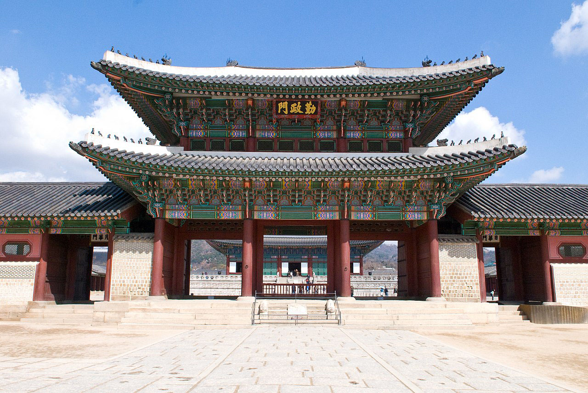
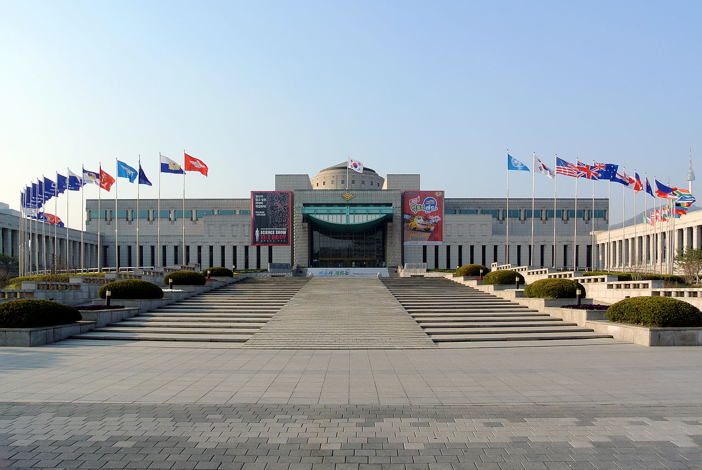
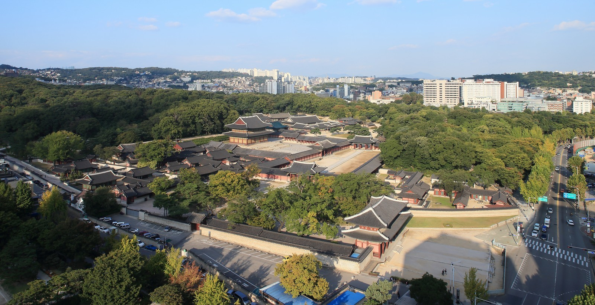
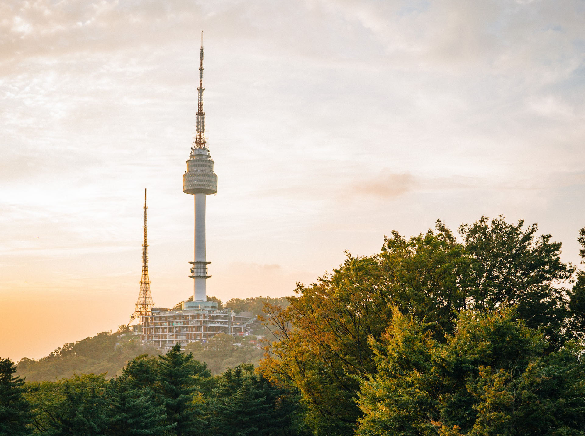
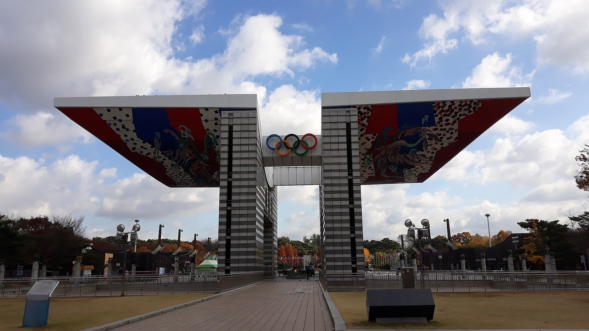

Seoul, South Korea
Monuments and places
One of the best things about South Korea is it’s a land filled with a rich cultural heritage. While these cultural gems form the heart of a list of famous landmarks in South Korea, in recent years, the country has seen a simultaneous cultural emergence and tremendous growth in its technological industries. Famed the world over for the influence of K-Pop, Korean skincare and beauty, South Korea is becoming more and more influential over the west.
As we are talking about Seoul, these are some of its most remarkable monuments:
Gyeongbokgung
From Wikipedia, the free encyclopedia - Last Updated: Sep 28, 2022 - Source of information

by Josh Hallett 'aka' Hyku, CC BY-SA 2.0, Link
Gyeongbokgung (Korean: 경복궁; Hanja: 景福宮), also known as Gyeongbokgung Palace or Gyeongbok Palace, was the main royal palace of the Joseon dynasty. Built in 1395, it is located in northern Seoul, South Korea. The largest of the Five Grand Palaces built by the Joseon dynasty, Gyeongbokgung served as the home of Kings of the Joseon dynasty, the Kings' households, as well as the government of Joseon.
Gyeongbokgung continued to serve as the main palace of the Joseon dynasty until the premises were destroyed by fire during the Imjin War (1592–1598) and abandoned for two centuries. However, in the 19th century, all of the palace's 7,700 rooms were later restored under the leadership of Prince Regent Heungseon during the reign of King Gojong. Some 500 buildings were restored on a site of over 40 hectares. The architectural principles of ancient Korea were incorporated into the tradition and appearance of the Joseon royal court.
In the early 20th century, much of the palace was systematically destroyed by Imperial Japan. On January 21, 1963, it was designated as a cultural property. Since the 1990s, the walled palace complex is gradually being restored to its original form. Today, the palace is arguably regarded as being the most beautiful and grandest of all five palaces. It also houses the National Palace Museum and the National Folk Museum within the premises of the complex.
War Memorial of Korea
From Wikipedia, the free encyclopedia - Last Updated: Aug 21, 2022 - Source of information

by Adbar, CC BY-SA 3.0, Link
The War Memorial of Korea is a museum located in Yongsan-dong, Yongsan-gu, Seoul, South Korea. It opened in 1994 on the former site of the army headquarters to exhibit and memorialize the military history of Korea. It was built for the purpose of preventing war through lessons from the Korean War and for the hoped for peaceful reunification of North and South Korea. The memorial building has six indoor exhibition rooms and an outdoor exhibition centre displaying war memorabilia and military equipment from China, South Korea and the United States.
Changdeokgung
From Wikipedia, the free encyclopedia - Last Updated: May 16, 2022 - Source of information

by Unknown author - 서울연구데이터베이스, CC BY 2.0 kr, Link
Changdeokgung (Hangul: 창덕궁, Hanja: 昌德宮; literally, "The Palace of Prospering Virtue"), also known as Changdeokgung Palace or Changdeok Palace, is set within a large park in Jongno District, Seoul, South Korea. It is one of the "Five Grand Palaces" built by the kings of the Joseon Dynasty (1392–1897). As it is located east of Gyeongbok Palace, Changdeokgung—along with Changgyeonggung—is also referred to as the "East Palace" (동궐, 東闕, Donggwol).
Changdeokgung was the most favored palace of many Joseon kings and retained many elements dating from the Three Kingdoms of Korea period that were not incorporated in the more contemporary Gyeongbokgung. One such element is the fact that the buildings of Changdeokgung blend with the natural topography of the site instead of imposing themselves upon it. Like the other Five Grand Palaces in Seoul, it was heavily damaged during the Japanese occupation of Korea (1910–1945). Currently, only about 30% of the pre-Japanese structures of the East Palace Complex (Changdeokgung together with Changgyeonggung) survive.
N Seoul Tower
From Wikipedia, the free encyclopedia - Last Updated: Sep 26, 2022 - Source of information

by Robson Hatsukami Morgan in Unsplash
The N Seoul Tower (Korean: N 서울타워), officially the YTN Seoul Tower and commonly known as Namsan Tower or Seoul Tower, is a communication and observation tower located on Nam Mountain in central Seoul, South Korea. The 236-meter (774 ft)-tall tower marks the second highest point in Seoul.
Built in 1969, the N Seoul Tower is South Korea's first general radio wave tower, providing TV and radio broadcasting in Seoul. Currently, the tower broadcasts signals for Korean media outlets, such as KBS, MBC, and SBS.
Olympic Park, Seoul
From Wikipedia, the free encyclopedia - Last Updated: Abr 26, 2022 - Source of information

by Silas Low, CC BY-SA 4.0, Link
Seoul Olympic Park, shortened to Olpark, is an Olympic Park built to host the 1988 Summer Olympics. It is located in Bangi-dong, Songpa-gu, Seoul, South Korea. The two nearest subway stations are Mongchontoseong and Olympic Park.
Copyright: All content is for non-commercial educational use only.
The information on this page has been adapted via Wikipedia, the free encyclopedia. Images have been credited to their respective author, their license, and in each case there is a link to the original source of the information.
Back to top of page